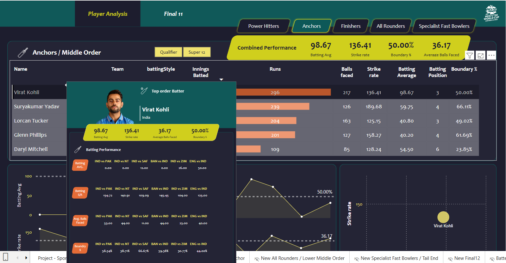
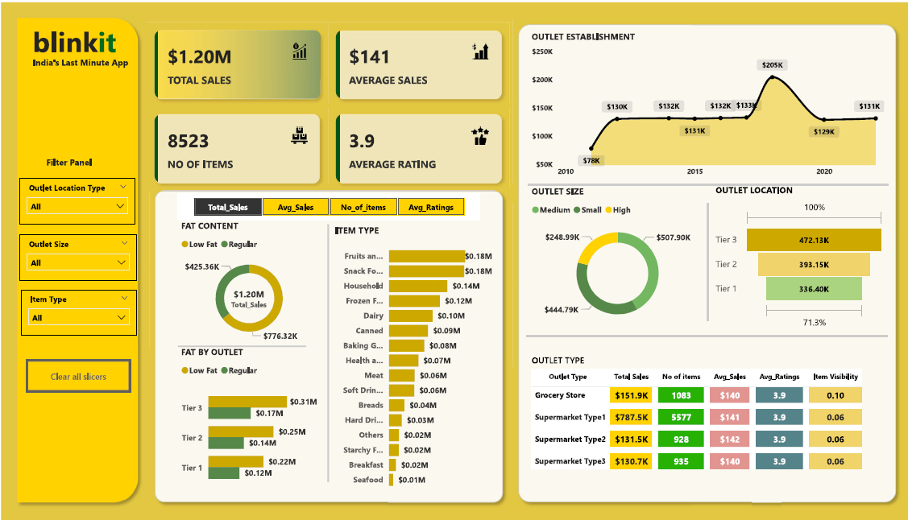
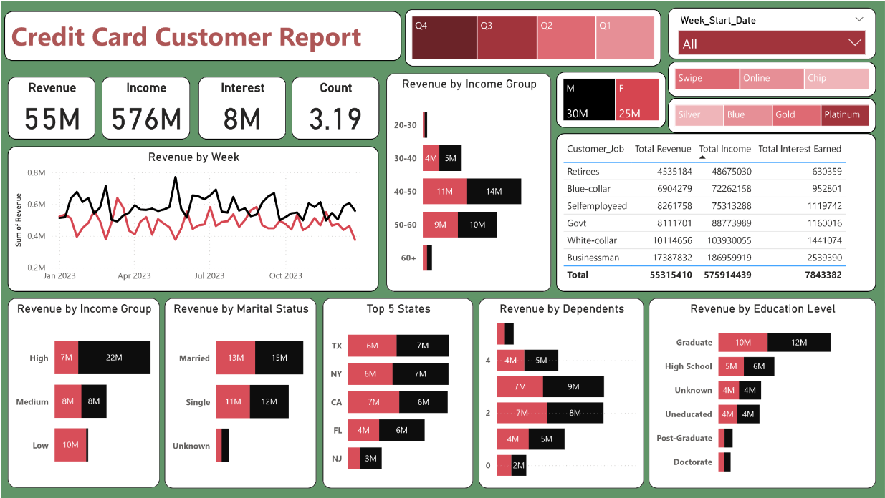
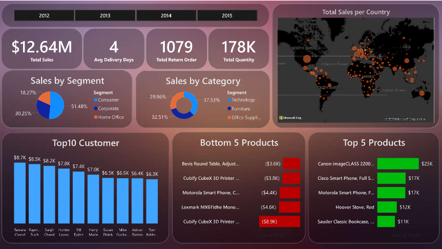
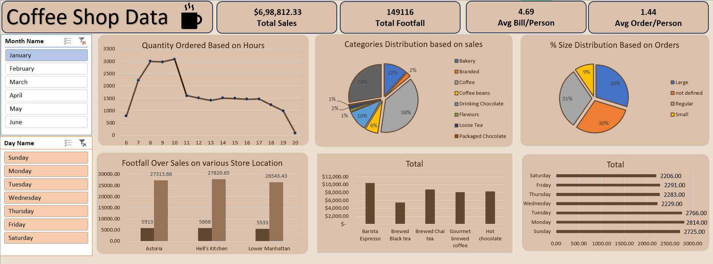
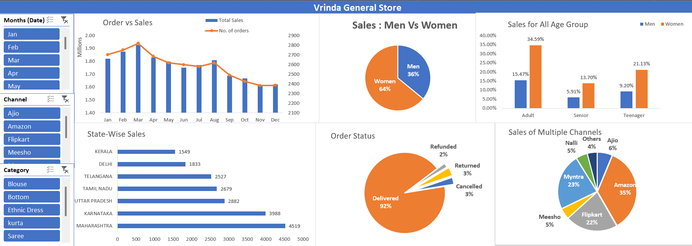
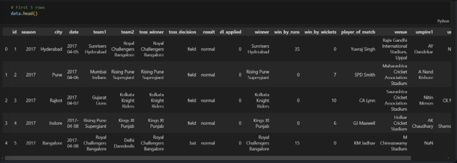
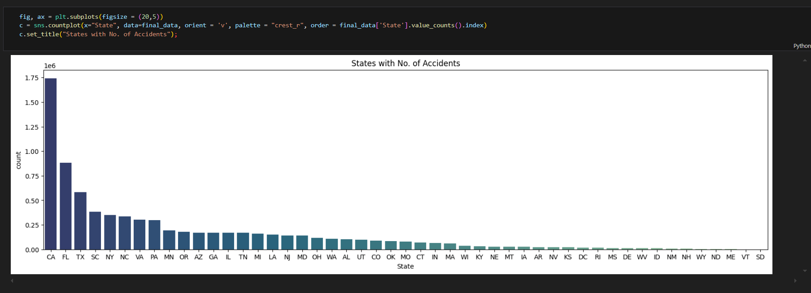

Cricket Data Analysis Project
"Project aims to identify the strongest possible cricket team based on key performance metrics. The project establishes data-driven selection criteria for different player roles—openers, middle-order anchors, finishers, all-rounders, and specialist bowlers—ensuring an optimal balance between batting and bowling capabilities. By analyzing statistics such as batting average, strike rate, boundary percentage, and bowling economy, this project enables strategic team formation, ensuring the selected squad can consistently score high and defend challenging targets effectively."

Blinkit Data Analysis Dashboard

The Blinkit Sales Analysis Dashboard provides a omprehensive overview of sales performance, helping businesses track key metrics, identify trends, and optimize decision-making. This interactive dashboard enables stakeholders to analyze revenue patterns, order volumes, customer behavior, and product performance.
Credit Card Financial Dashboard

The Credit Card Financial Dashboard is a data-driven solution designed to provide real-time insights into key performance metrics of credit card operations. This interactive dashboard enables stakeholders to monitor revenue trends, transaction volumes, customer demographics, and regional performance on a weekly basis.

The Global Superstore Sales Dashboard provides an in-depth analysis of sales performance, customer demographics, and regional trends. This dashboard enables businesses to track key sales metrics, identify revenue patterns, and optimize decision-making for improved profitability.
Coffee Shop Sales Analysis

The Coffee Shop Sales Analysis Dashboard provides a comprehensive view of sales performance, customer trends, and product insights to help optimize business operations. This interactive dashboard enables stakeholders to track revenue growth, analyze customer preferences, and identify top-performing products, ensuring data-driven decision-making for enhanced profitability.
Vrinda Store Sale Dashboard

The Vrinda Store Data Analysis Dashboard provides a detailed overview of sales performance, customer purchasing trends, and product insights to enhance business decision-making. This interactive dashboard enables stakeholders to track key metrics, optimize inventory, and improve overall store efficiency.
IPL Dataset Analysis Project

The IPL Data Analysis Project is a Python-based exploratory data analysis (EDA) project that provides key insights into Indian Premier League (IPL) matches. By leveraging Pandas, NumPy, Matplotlib, and Seaborn, this project explores various aspects of IPL match data, uncovering trends and patterns to enhance cricket analytics.
US Traffic Accident Analysis

The US Accidents Data Analysis Project is a Python-based exploratory data analysis (EDA) initiative aimed at understanding traffic accident trends across the United States. Using Pandas, NumPy, Matplotlib, Seaborn, Plotly, and Missingno, this project provides valuable insights into accident patterns, contributing factors, and potential safety improvements.